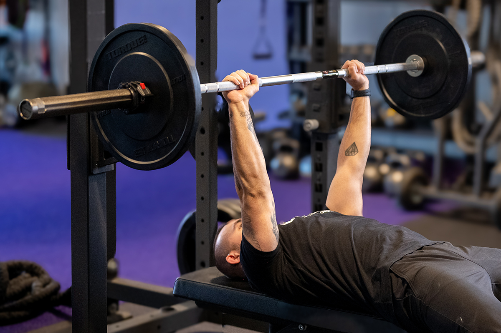

Strength Training Tips
Strength training involves using external resistance to challenge your muscles. Here are some tips to help you get started:
- Warm Up and Cool Down: Spend 5-10 minutes warming up (walking is great) and cooling down (stretching) before and after your workout.
- Focus on Form: Proper form is crucial. Align your body correctly and move smoothly through each exercise to avoid injuries.
- Work at the Right Tempo: Control your movements rather than relying on momentum. This maximizes strength gains.
- Pay Attention to Breathing: Breathe consistently during your workouts to maintain focus and energy.
- Gradually Increase Weight or Resistance: Challenge your muscles by progressively adding weight or resistance over time.
- Consistency: Aim for strength workouts 3 times per week. You can alternate between upper and lower body exercises.
- Teaming Up: Consider working out with a friend for motivation and accountability.
Remember to consult a fitness professional or a doctor before starting any new exercise program. Enjoy your strength training journey! üí™üèãÔ∏è‚Äç‚ôÄÔ∏è
Squats: Stand with your feet shoulder-width apart. Lower your body by bending your knees and hips, keeping your back straight. Return to the starting position by pushing through your heels.

Bench Press: Lie on a flat bench with a barbell above your chest. Lower the barbell to your chest, then press it back up.
Deadlifts: Stand with your feet hip-width apart. Bend at the hips and knees to lift a barbell from the ground. Keep your back straight and engage your core.